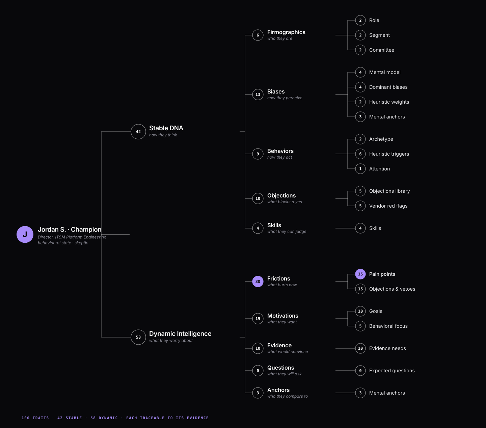

What’s working, what’s broken, and what to fix, from up to 300 agents built out of your buyers’ own words. 30 minutes, from a URL.
473 calls, graded HIT or MISS by your team against your own data.
From a URL to a fix list. Review rounds take two weeks.
Every finding traces to a named page and a buyer’s own words.
WhyUser tests a B2B landing page, ad or email before you launch it. A page or content run fields 50 agents and an ad or email run fields 300, up to 60 per role. Each agent is built from your buyers’ own words and cites its source, and together they report what’s working, what’s broken and what to fix in about 30 minutes.
Engineering ships to staging first and operations runs a dry run. Marketing goes straight to opening night, then buys traffic to find out whether the message landed.
Engineering tests on staging. Operations runs a dry run. Marketing has neither, and goes live cold.
Launch first. Learn after the spend.
On familiarity, motivation and skill, your own reviewers sit at the top of every scale. Your real buyers are spread across the rest of it.
Your team is the ideal buyer. Your buyers are skeptical or distracted.
Claude / ChatGPT
Your buyer
An AI assistant reads every line of the page in order. One of your buyers reads the headline, skips to hunt for one thing, and leaves part way down.
AI reads every word. Your buyers scan, hunt, bounce.
The result: wasted budget, and weeks before anyone can say which part of the message missed.
Give WhyUser a URL, a PDF or your copy. A buying committee built from your own buyers' words reads it, and you get what is working, what is broken and what to fix in about 30 minutes.
Five committee roles read your asset: champion, end user, technical decision maker, economic buyer and security guardian. Every role is run in three states, ideal, skeptical and distracted, weighted to your real traffic.
A page or content run fields 50 agents. An ad or email run fields 300, up to 60 per role. Every run size and rate.
Unedited. One is this homepage. It found our nav hard to scan and our proof thin.
WhyUser gives me the ammunition to make the case internally, to engineering, leadership and sales. It doesn't just say a page is broken, it shows who bounces and what to fix.
You do not write a persona document. WhyUser compiles each buyer agent from six evidence sources: three public ones that work from your first run, and three of your own that start the day you connect them. The agents recompile whenever that evidence changes.
Six evidence sources compile into your buyer agents. Three are public and work from the first run: company context from your site, ACV and GTM motion; market intelligence from reviews, communities and competitors; and AI awareness of how ChatGPT, Claude and Perplexity describe you. Three are yours and start when you connect them: customer voice from call recordings and CRM objections; institutional knowledge from win/loss notes, positioning and battlecards; and expert knowledge from experiment findings and the corrections your team makes. The agents recompile as your data changes.
Where sources disagree, a real buyer’s words beat the AI’s guess.
Freeze a persona to hold a baseline, or leave it live and it rebuilds when new evidence lands. It never drifts on its own.

Most tools need weeks of manual data mapping. WhyUser's Ground Reality ingested our site, social sentiment and customer transcripts in minutes, and it keeps learning.
You already run plan, build, launch, measure. WhyUser moves the fixing to before the spend: it watches your staging pages, flags what is broken, and the fix lands ahead of launch instead of six weeks after it.
Today the sequence is plan, build, launch, measure, guess why, then fix. The guessing happens after the spend.
Weeks of traffic. Still no reason why.
With WhyUser the sequence is plan, build, fix, launch, measure. Fix moves ahead of launch, because WhyUser watches the build and flags the fixes before you spend.
Same flow. Fixes land before launch.
On staging
No change, no cost
Per page
What to fix
Monthly limits next
The CIO can’t see what drives cost.
Fix: show the price band and the top three cost drivers above the fold.
Example digest.
Nobody logs in. Nothing slows down.
WhyUser checks your staging URLs once a day and runs the committee only when the decision content on a page has actually changed. A run takes about 30 minutes and costs 20 credits; if nothing changed it skips the run and charges nothing.
Your staging URLs
Decision content only
~30 min · 20 credits
In the next digest
No run, no credits
Each day WhyUser checks your staging URLs. If the decision content on a page changed, it simulates the buying committee in about 30 minutes for 20 credits and posts the findings to your next Slack digest. If nothing changed, it skips the run and charges no credits.
Dates, counters and prices in copy.
You get an alert. No run, no charge.
Run it now from the policy.
Policies cap spend. Monthly and per-user limits next.
Set it up once. It runs only when a page really changes.
One run produces one block of buyer evidence. The team that owns the number and the team that owns the page work from the same block, so a change request arrives as a finding, not a preference.
Case studies and comparison pages that answer the objection the committee actually raised.
Blogs and whitepapers tested before they publish, not after they underperform.
A ranked fix list to review, instead of a redesign argued from taste.
You own the number, not the page. Send the page owner the buyer quote and the drop-off, and the fix gets scheduled without a debate.
A finding travels further than an opinion.
Use them for drafting and variants. For a spend decision, no: a chatbot answers as one patient reader, gives a different answer each time you ask, and has no memory of last week. Five things turn an opinion into something you can act on. Ask any tool here, including us.
Each version re-tests only what you changed.
An LLM gives one opinion. WhyUser shows which buyers give up, where, and why.
Better you know now than after a procurement cycle.
Your team needs the artifact, not you. We sell directly to your VP of Demand Gen instead.
One or two people decide, so the evidence carries less weight. The math doesn’t work for you yet.
It won't. Come back after the campaign that taught you that.
It depends on the run. A landing page or content page test fields 50 agents, ten per committee role. An ad or email campaign test fields 300, up to 60 per role. Every role runs in three states — ideal, skeptical and distracted — weighted to your real traffic.
Yes. WhyUser checks your staging URLs on a daily schedule and runs the committee only when the decision content on a page has actually changed. Cosmetic edits such as dates, counters or prices in the copy do not trigger a run. Findings arrive as a Slack digest, and a page run costs 20 credits.
No. WhyUser compiles them from evidence you already have. On the public side: your site, review sites, community threads and competitor complaints. On your side, when you connect it: call recordings, CRM objections, win/loss notes, and the experiment findings and corrections your own team makes. Where two sources disagree, a real buyer’s words beat the model’s guess.
Yes, provided WhyUser can reach it. Allowlist the crawler or share a password-protected link. If staging is unreachable when a scheduled run fires you get an alert rather than a silent failure, and nothing is charged.
An A/B test tells you which variant won after you have already paid for the traffic, and it cannot tell you why. WhyUser runs before launch, names the role that stalled and the proof they were missing, and returns a ranked fix list in about 30 minutes. The two are complementary: test before you spend, then measure what you shipped.
One run produces one block of buyer evidence that four functions work from. Product marketing takes the objections into case studies and comparison pages. Content tests blogs and whitepapers before publishing. Web and CRO work the ranked fix list. Demand gen checks that the ad and the landing page still promise the same thing.
Fourteen more, including what we will not do with your data — the full FAQ.
Tell us about the next campaign you have going live. We reply within 48 hours.
The test we ask you to run is the one that can embarrass us: a page or campaign that underperformed, where you already know the reason. If the simulation does not find what you found, you have learned that cheaply.
Start with one engine rather than all four. Most partners start here.
Pages or campaigns that underperformed, and where you already know why. Keep the reason to yourself until the run finishes.
WhyUser runs. Then you grade it: do its findings match yours? Every call is logged HIT or MISS, and the misses stay on the record.